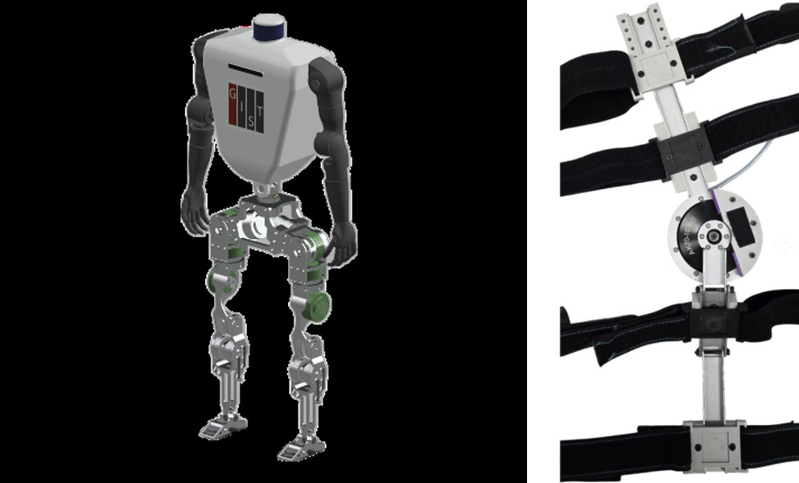
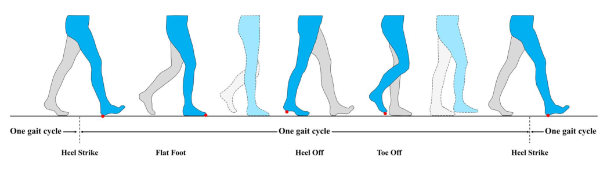
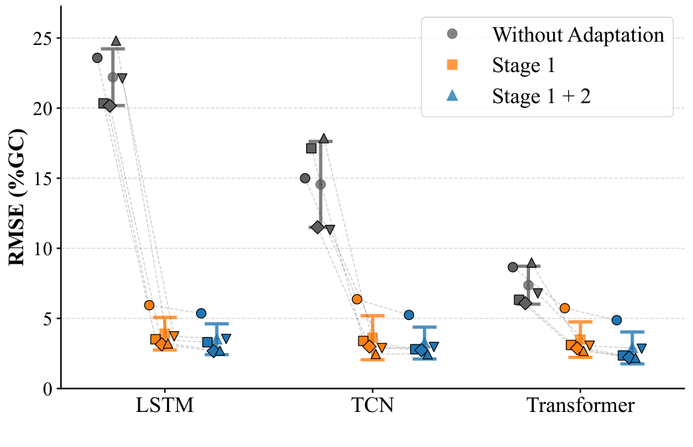
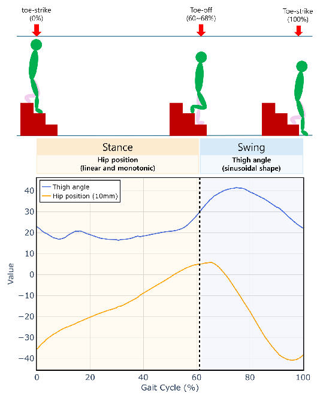
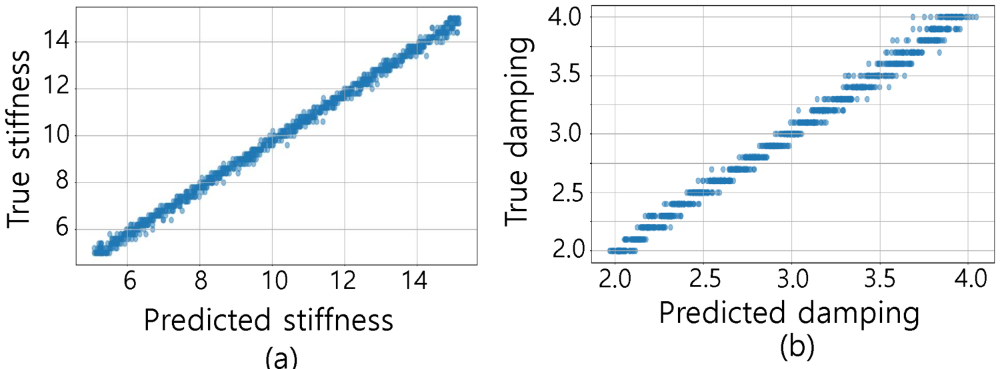
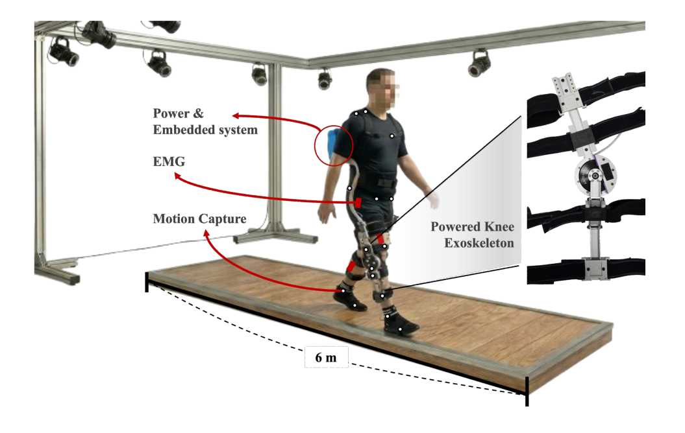
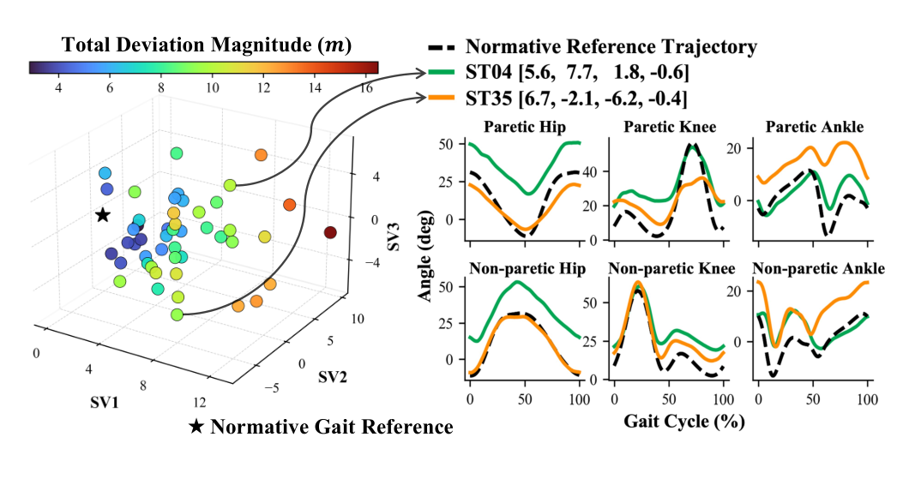

Research Interests
Free Energy Principle

The Free Energy Principle (FEP) proposes that the brain perceives, acts, and learns by minimizing a single quantity, free energy, which measures the mismatch between what it predicts and what it senses. We use FEP both to understand human motor control and to control robots. Our earlier work showed that fingertip skin-stretch feedback reduces the entropy of postural sway, consistent with the human balance system minimizing free energy. In robotics, we use Active Inference, the action side of FEP, to estimate hidden states and disturbances and to generate control inputs within one framework. Because FEP relies on a generative model rather than large trained networks, it estimates states with little delay, is robust to noise, and adapts without extensive training data. We have applied it to state estimation of nonlinear systems, disturbance observers, knee exoskeleton control, and robot cleaners that avoid getting stuck. We are now building an FEP-based framework for personalized, adaptive control of wearable gait-assistance robots.
Related publications: Hur et al., Free Energy Principle in Human Postural Control System: Skin Stretch Feedback Reduces the Entropy, Scientific Reports, 2019; Moon et al., State Estimation of Nonlinear System Based on Free Energy Principle, ICROS 2024; Ryu and Hur, Active Inference for Unified Control and Disturbance Estimation in Robotics: An Empirical Study, AMC 2026; Ryu and Hur, Active Inference-Based Implementation of Disturbance Observers: An Empirical Validation for Robotic Control, Scientific Reports (in review).
Control of Bipedal and Wearable Robots

Bipedal robots and wearable robots share the same core problem: producing stable, efficient, human-like walking. On the bipedal side, we develop humanoid robots and their walking controllers. We use trajectory optimization with direct collocation, study how a compliant toe joint makes walking more human-like, and develop whole-body control based on contact events. We also use reinforcement learning for bipedal locomotion, including push recovery beyond the trained disturbance range, gaits that make use of passive toe dynamics, and reward designs shared across robot platforms. On the wearable side, we develop and control powered prostheses and exoskeletons for the hip, knee, and upper limb. Examples include impedance control of a powered transfemoral prosthesis on level and sloped ground, an asymmetric-torque exoskeleton for gait rehabilitation after stroke, modular hip–knee exoskeletons, and real-time model predictive control for upper-limb exoskeletons.
Related publications: Cho et al., Optimizing Toe Joint Stiffness to Improve Human-Like Walking, Scientific Reports, 2025; Knisley et al., Preferred Jacobian Differentiation and Direct Collocation Methods for an Efficient and Accurate Walker Gait Optimization, IJCAS, 2025; Anil Kumar et al., Control Framework for Sloped Walking With a Powered Transfemoral Prosthesis, Frontiers in Neurorobotics, 2022; Cho et al., Design and Control of an Asymmetric-Torque Exoskeleton for Gait Rehabilitation in Hemiparetic Patients, IFAC World Congress 2026; Kim and Hur, Capture-Point-Guided Bipedal Push Recovery Beyond the Training Perturbation Range, RiTA 2026.
Gait Phase Estimation

For a prosthesis or exoskeleton to assist at the right moment, it must know where the user is in the gait cycle, from heel strike through stance and swing to the next heel strike. We estimate a continuous gait phase (0–100%) from a small number of wearable sensors, so the device can stay synchronized with the user. Our methods include phase variables derived from thigh motion, with phase-shifting and piecewise formulations that hold up when walking speed or toe-off timing changes. We also use learning-based estimators (LSTM, TCN, and Transformer models) that work across walking speeds. Most recently, we developed a knowledge-distilled network that estimates gait phase, ground reaction forces, and gait events in real time on an embedded processor using only joint angles, without foot contact sensors.
Related publications: Hong et al., IEEE RA-L, 2021; Lee et al., Continuous Gait Phase Estimation using LSTM for Robotic Transfemoral Prosthesis Across Walking Speeds, IEEE TNSRE, 2021; Hong et al., Piecewise Linear Labeling Method for Speed-Adaptability Enhancement in Human Gait Phase Estimation, IEEE TNSRE, 2023; Hong et al., IEEE RA-L, 2023; Moon and Hur, Real-Time Gait Phase Estimation and Ground Reaction Force Prediction via Knowledge-Distilled Temporal Convolutional Network for Lower-Limb Exoskeleton Control, ICCAS 2026.
Adaptive Gait Phase Estimation

No two people walk alike, and a person's own gait keeps changing with fatigue, recovery, and assistance from the device. This is especially true after stroke. A one-size-fits-all estimator trained on the average healthy gait therefore loses accuracy for the individual user, and that user is the person the device has to synchronize with. Our goal is personalized gait phase estimation: estimators that learn each user's own gait pattern from minimal calibration and keep adapting as that pattern changes. One approach uses adaptive dynamic movement primitives (DMPs) and an adaptive Kalman filter to learn each person's gait pattern and model their own phase error. Another uses continual learning to turn a model pre-trained on healthy gait into a personal model in two stages. First, participant-specific calibration adapts the model to the user. Then, low-rank refinement on each new gait cycle keeps it up to date while preserving what it has already learned. In stroke survivors walking with a powered knee exoskeleton, this two-stage personalization greatly reduced phase estimation error for LSTM, TCN, and Transformer models. We also personalize kernel-based estimators that track gait phase and walking speed together from wearable IMUs, using only sparse calibration data, which keeps setup time short in the clinic.
Related publications: Ryu and Hur, Two-Stage Personalized Gait Phase Estimation in Stroke Survivors During Exoskeleton-Assisted Walking: An Offline Feasibility Study, IEEE TNSRE (accepted); Ryu et al., Continual Learning Based Personalization for Gait Phase Estimation in a Powered Transfemoral Prostheses: A Feasibility Study, IFAC World Congress 2026; Moon and Hur, Phase Variable Estimation Based on Gait Pattern Adaptive Dynamic Movement Primitives, ICROS 2025; Cha and Hur, Sparse Calibration-Based Personalization of Kernel-Based Gait Phase and Speed Estimation Using Wearable IMUs, ICCAS 2026.
Stair Descent Phase Estimation

Most phase variables are built from the thigh angle, which follows a sinusoidal pattern during level walking. During stair descent, however, the thigh angle is only partly sinusoidal, so these methods break down, and stair descent has received little attention despite its high fall risk. We proposed a phase variable that is defined differently for each phase of the stair-descent cycle. It uses hip position during stance, where hip position decreases steadily, and thigh angle during swing, where the thigh angle is sinusoidal, with a smooth transition between the two. This produces a monotonic, continuous gait phase for stair descent and enables reliable synchronization of powered prostheses and exoskeletons on stairs.
Related publication: Cha and Hur, Estimation of Gait Phase of Human Stair Descent Walking Based on Phase Variable Approach, IEEE RA-L, 2025 (presented at ICRA 2026).
Joint Impedance Estimation

Joint impedance, meaning the stiffness and damping of a joint, describes how a joint resists motion. It changes with muscle activation, posture, and conditions such as post-surgical stiffness or spasticity. Knowing a user's joint impedance lets rehabilitation devices and wearable robots tailor their assistance and adjust therapy as the patient recovers. Classical system identification needs long, carefully controlled perturbation trials, which is impractical in daily or clinical use. We estimate time-varying joint impedance from short data segments using deep learning. A bidirectional LSTM trained on simulated joint dynamics estimates stiffness and damping from far less data than classical least-squares methods need, and noise augmentation inspired by diffusion models makes it robust to sensor noise. An early application is a portable continuous passive motion (CPM) device that adapts its motion to each patient's estimated joint stiffness.
Related publications: Park and Hur, Bi-LSTM based Estimation of Time-Varying Joint Impedance: Comparison with Classical Methods Using Simulation, ICROS 2025; Park and Hur, Noise-Robust Bi-LSTM Joint Impedance Estimation via Cosine-Scheduled Diffusion-Style Noise Augmentation, ICROS 2026; Park and Hur, Bi-LSTM based Estimation of Time-Varying Joint Impedance, IEEE RA-L (in preparation).
Human-Robot Interaction
When a robot is worn on the body, the interaction between person and machine is both physical and psychological. Whether people accept and keep using a wearable robot depends not only on how well it assists, but also on how they experience it. We study physical human-robot interaction (pHRI) with a focus on how users perceive and respond to wearable robots, so that the robot can take these responses into account.
Trust

Trust is critical in wearable robotics because users hand over control of their own movement to a device on their limbs. Most HRI research treats trust as a single score borrowed from automation or social psychology. We developed a measurement framework specific to physically coupled interaction. It covers several dimensions: ability, wearability, comfort, transparency, safety, and overall trust. With stroke survivors walking in a powered knee exoskeleton, we built a two-layer model that predicts trust from biomechanical signals such as kinematics and EMG. The first layer captures relationships that hold across people, and the second calibrates them to each individual. We also link specific controller behaviors, such as variability in motor power, to how users report trust and safety, toward trust-aware control. Related work examines how the timing of haptic fault warnings and users' state anxiety affect trust, and estimates anxiety in real time to adapt exoskeleton control.
Related publications: Cho, Akhyani, and Hur, Trust in Physically Coupled Human-Robot Interaction: A Review and Measurement Framework, ACM Transactions on Human-Robot Interaction (in review); Cho and Hur, Trust Prediction in pHRI: Classifying Post-Stroke Trust in Wearable Exoskeletons, IEEE TNSRE (under revision); Cho and Hur, Toward Trust-Aware Control in Wearable Gait Assistance, ICCAS 2026; Akhyani and Hur, When Should an Exoskeleton Warn? Haptic Fault-Warning Timing, Trust and Anxiety, RiTA 2026.
Preference
Gait Anomaly Detection

Abnormal gait comes in many forms, and the summary measures and discrete subtype labels used today often miss its continuous, multifaceted nature. We develop data-driven methods to detect and characterize gait abnormalities in ways clinicians can interpret. For post-stroke gait, a temporal convolutional autoencoder encodes hip, knee, and ankle kinematics. Each patient's deviation from a normative reference is then expressed with a few interpretable coordinates, such as speed and range of motion, hip–knee offset, and paretic ankle offset. This places each patient on a continuous map instead of in a fixed category. For foot and ankle disorders, we combine statistical shape models of X-ray images with gait data from large public datasets to identify the anatomical features that distinguish each disorder, toward fast and explainable diagnosis.
Related publications: Ryu and Hur, Continuous Representation and Analysis of Post-Stroke Gait from Gait Kinematics using Neural Networks, KSME Bioengineering Conference 2026; Lee and Hur, Localized Morphological Differentiation of Foot Disorders via Statistical Shape Modeling, KSME Bioengineering Conference 2025; Lee, Kim, and Hur, Development and Interpretation of a Diagnostic Model for Foot and Ankle Diseases Using Public Medical Imaging, Medical Image Analysis (in preparation).